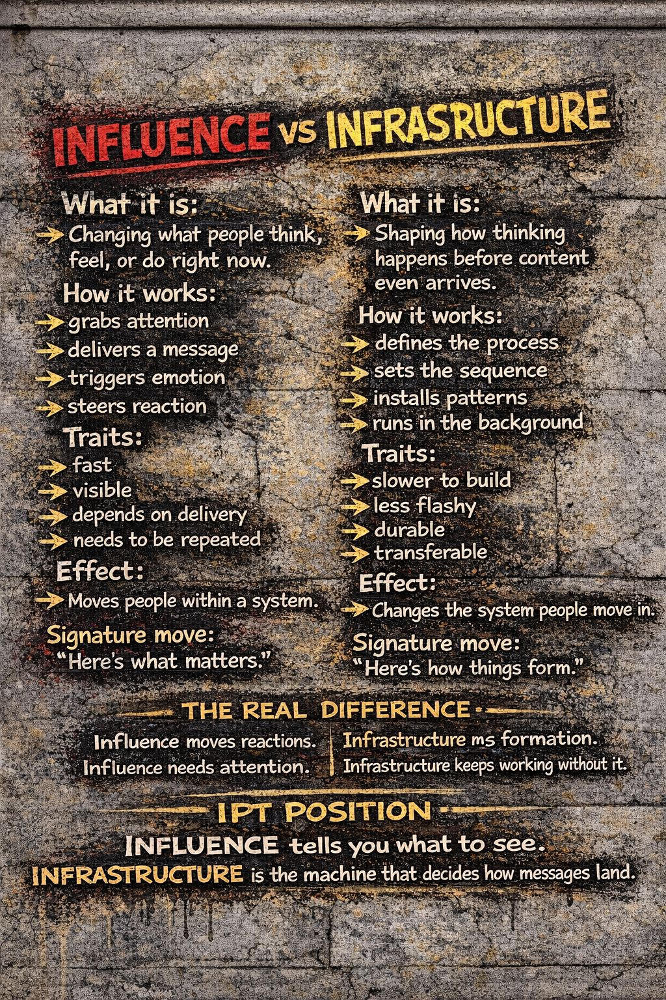

🔴 INFLUENCE feels urgent, loud, attention-grabbing.
🟡 INFRASTRUCTURE feels grounded, structural, built.
🔥 Influence
What it is:
Changing what people think, feel, or do right now.
How it works:
- grabs attention
- delivers a message
- triggers emotion
- steers reaction
Traits:
- fast
- visible
- depends on delivery
- needs to be repeated
Effect:
Moves people within a system.
Signature move:
“Here’s what matters.”
🧱 Infrastructure
What it is:
Shaping how thinking happens before content even arrives.
How it works:
- defines the process
- sets the sequence
- installs patterns
- runs in the background
Traits:
- slower to build
- less flashy
- durable
- transferable
Effect:
Changes the system people move in.
Signature move:
“Here’s how things form.”
⚙️ The Real Difference
Influence moves reactions.
Infrastructure shapes formation.
Influence needs attention.
Infrastructure keeps working without it.
Influence wins moments.
Infrastructure survives them.
🧠 IPT Position
IPT doesn’t say:
“Believe this.”
It says:
“Watch how belief happens.”
🔥 Final Distillation
Influence tells you what to see.
Infrastructure changes what you’re able to see.
Influence is the message.
Infrastructure is the machine that decides how messages land.
#IdentityPanicToolkit